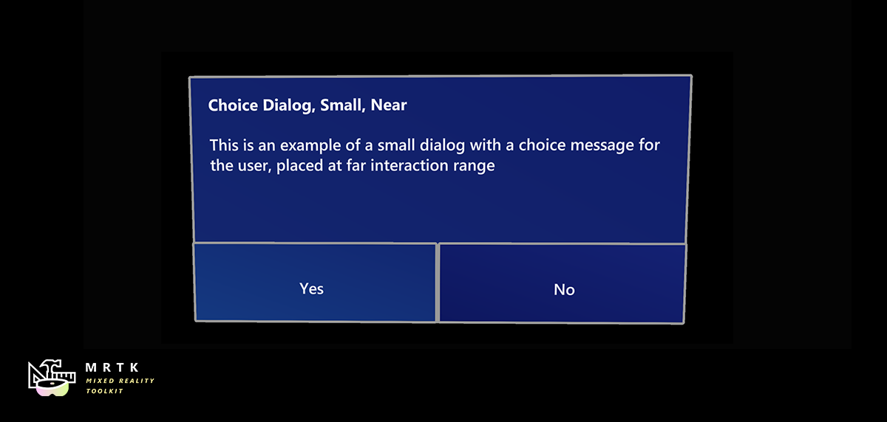

对话框 Dialog

对话框控件是提供上下文应用程序信息的UI覆盖。它们经常要求用户进行某种操作。在操作完成之前，使用对话框通知用户重要信息或请求确认或其他信息。
示例场景
你可以在DialogExample场景中找到例子: MRTK/Examples/Experimental/Dialog
如何使用对话框控件
MRTK 提供三个对话框预置体:
- DialogSmall_192x96.prefab
- DialogMedium_192x128.prefab
- DialogLarge_192x192.prefab
使用Dialog.Open() 打开一个新的对话框。指定对话框预制体，按钮数量，标题文本，消息文本，放置距离(近或远)，其他变量)。对话框提供'确认(单个按钮)'和'选择(两个按钮)'对话框选项。
public static Dialog Open(GameObject dialogPrefab, DialogButtonType buttons, string title, string message, bool placeForNearInteraction, System.Object variable = null)
打开具有单个 'OK' 按钮的大对话框的例子，它被放置在远交互范围(凝视，手部射线，运动控制器):
Dialog.Open(DialogPrefabLarge, DialogButtonType.OK, "Confirmation Dialog, Large, Far", "This is an example of a large dialog with only one button, placed at far interaction range", false);
打开具有单个 'OK' 按钮的小对话框的例子，它被放置在近处交互范围(直接手动交互):
Dialog.Open(DialogPrefabSmall, DialogButtonType.Yes | DialogButtonType.No, "Confirmation Dialog, Small, Far", "This is an example of a small dialog with a choice message, placed at near interaction range", true);
更多细节，请参见DialogExampleController.cs。在DialogExample.unity 的场景中。